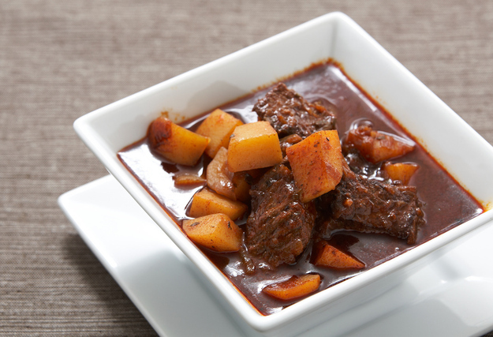
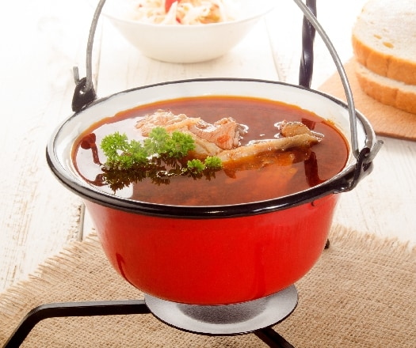

| Étel neve | Étel kinézete | Étel leírása |
| Gulyás |  | Mi ez: A gulyás nagyon népszerű magyar leves. Nagy marhahúsdarabokat, krumplit, zöldségeket, egy kevés paprikát és csípőset tartalmaz. Miért olyan nagyszerű: Eredetileg marhapásztorok készítették, a gulyás egyszerűen remek étel: szívélyes, otthonos és forró. |
| Halászlé |  | Mi ez: A gulyás nagyon népszerű magyar leves. Nagy marhahúsdarabokat, krumplit, zöldségeket, egy kevés paprikát és csípőset tartalmaz. Miért olyan nagyszerű: Eredetileg marhapásztorok készítették, a gulyás egyszerűen remek étel: szívélyes, otthonos és forró. |